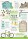
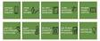

환경과학
환경 교육
탄소 발자국과 기후 변화
우리의 일상이 지구에 미치는 영향
고등학교 1학년 통합과학
·
탄소 발자국과 기후 변화
⊕ 탄소 발자국이란?
개인·조직의 활동이 배출하는 온실가스 총량
13.2t
한국인 1인당 연간 CO₂ 배출량
4.7t
세계 평균 1인당 배출량
2.8배
세계 평균 대비 한국
한국은 세계 평균보다 약 2.8배 많은 탄소를 배출하고 있으며, 이를 줄이기 위한 노력이 필요합니다.
탄소 발자국과 기후 변화
⊕ 온실가스 배출원

주요 배출 부문
- 에너지 생산 — 전체의 73%
- 산업 공정 — 전체의 5.2%
- 농업·축산 — 전체의 12%
- 폐기물 — 전체의 3.2%
탄소 발자국과 기후 변화
⊕ 기후 변화의 영향
해수면 상승
2100년까지 최대 1m 상승 예측. 연안 도시 침수 위험
극단적 기상
폭염, 한파, 집중호우 등 이상기후 빈도 증가
생태계 파괴
생물 다양성 감소, 산호 백화 현상 가속
식량 위기
농업 생산성 저하, 물 부족으로 식량 안보 위협
탄소 발자국과 기후 변화
⊕ 일상 속 탄소 배출
우리가 매일 만드는 탄소 발자국
-
①
자동차 출퇴근 (편도 20km)
하루 약 8.4kg CO₂ 배출. 대중교통 이용 시 약 70% 감소
-
②
소고기 100g 소비
약 6.6kg CO₂ 배출. 채식 한 끼 시 약 2.5kg 절감
-
③
넷플릭스 1시간 시청
약 36g CO₂ 배출. 데이터센터의 전력 소비가 원인
탄소 발자국과 기후 변화
⊕ 실천 방법
우리가 지금 할 수 있는 일

♻️
이미지를 불러올 수 없습니다
일상에서 실천할 수 있는 탄소 절감 활동
탄소 발자국과 기후 변화
⊕ 탄소 절감 체크리스트
대중교통 이용하기
자가용 대신 버스·지하철 이용으로 연간 2.4t 절감
텀블러 사용하기
일회용 컵 1개당 약 11g CO₂ 절감
실내 온도 조절
냉·난방 1°C 조절로 연간 약 200kg CO₂ 절감
로컬 푸드 소비
식품 운송 과정의 탄소 배출 최소화
탄소 발자국과 기후 변화
작은 실천이 지구를 바꿉니다
오늘부터 한 가지 탄소 절감 실천을 시작해 보세요. 나의 작은 변화가 지구의 내일을 만듭니다.
다음 시간 — 재생 에너지의 미래